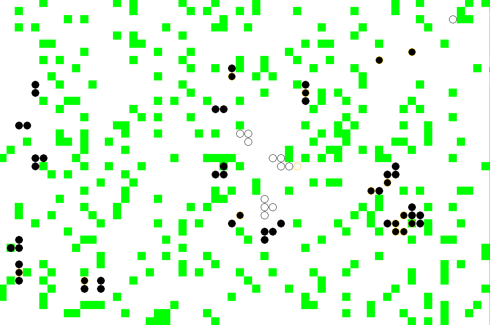

Objectif
L’objectif de ce TP est d’implanter un système dynamique, c’est-à-dire un système dont l’état évolue par étape successive. Nous allons programmer une simulation d’un champ contenant des moutons et des loups.

Récupération du code
L’ensemble du code est disponible dans un repo indépendant. A partir d’IntelliJ, vous pouvez le récupérer directement en choisissant “New Project from version controll” et en donnant l’URL du repo : https://gitlab.dsi.universite-paris-saclay.fr/javabibs/TP4_Heritage.
Sinon, il est aussi possible de le télécharger (bouton téléchargement à côté de “Clone” ou d’effectuer un clone avec git si vous savez faire (Remarque : nous aurons une séance spéciale sur le fonctionnement de git au début de l’UE Projet de Programmation, pour l’instant ce n’est pas nécessaire).
Mise à jour du projet dans Intellij
Une fois le projet récupéré, vous devez avoir un Projet ouvert “TP4_Heritage” dans Intellij avec un dossier src contenant les classes.
Ouvrez une classe du package test : une erreur apparaît. Faites bouton droit sur le mot junit écrit en rouge, puis More actions et ajoutez JUnit 5 (attention !! Pas JUnit4 qui est proposé par défaut)
Parfois, l’erreur continue d’être soulignée. Refermez et réouvrez la classe. Si elle est toujours là, ouvrez la classe FieldSystem et tentée de l’exécuter. Normalement, l’exécution doit se passer normalement et vous ouvrir une fenêtre blanche avant de lever une exception “Not implemented yet”.
Architecture générale
L’architecture du projet est déjà fournie et de nombreuses classes et interfaces sont écrites. Votre travail sera de compléter le code fourni.
Organisation des packages
- le package
fr.upsaclay.bibs.fieldsystem.viewconcerne la partie graphique de l’application. Nous n’avons pas encore abordé cet aspect : vous n’aurez rien à modifier. - le package
fr.upsaclay.bibs.fieldsystem.testcontient l’ensemble des tests que les classes devront satisfaire. - la classe
FieldSystemdans le packagefr.upsaclay.bibs.fieldsystemcontient une fonctionmaindéjà écrite (et très simple à comprendre) que vous pourrez utiliser quand vous aurez complété l’application. - Le travail à faire réside dans le package
fr.upsaclay.bibs.fieldsystem.sheepfieldqui correspond au modèle du système dynamique. Le système lui-même est déjà écrit dans la classeField: c’est une grille rectangulaire où chaque case contient une liste de d’objets de typeFieldElement, ce sont ces objets que vous allez écrire (l’herbe, les moutons et les loups)
L’interface FieldElement
Cette interface vous est donnée : elle permet de représenter tous les éléments évoluant dans le champ. Vous allez compléter les différentes classes implémentant l’interface en utilisant l’héritage et les classes abstraites.
Il y a 3 types de FieldElement : l’herbe (classe Grass), les moutons (classe Sheep) et les loups (classe Wolf). Les classes suivent la structure d’héritage suivante :
La classe AbstractFieldElement est déjà implantée, on reviendra sur son rôle et son fonctionnement. Vous implanterez (dans cet ordre) : la classe Grass, puis les classes Sheep et AbstractAnimal et enfin la classe Wolf. Le TP vous indiquera les étapes et vous donnera les explications nécessaires.
Avant de commencer : quelques nouveauté
Les classes enum
La classe FieldElementType est une classe particulière de type enum : cela reproduit le type enum du C. Les éléments de cette classes sont des objets comme les autres mais les seules instances possibles sont celles énumérées GRASS SHEEP et WOLF qui sont en réalité des constantes statiques. Pour les utiliser, on écrit par exemple
FieldElementType type = FieldElementType.SHEEPLa variable type est ensuite un objet de type FieldElementType. Elle possède la méthode getLevel qui pour le mouton renvoie 1.
Le type enum permet de facilement tester l’ensemble des posibilités avec une conditions de type switch. Un exemple vous est donné dans la classe DrawPanel du package fr.upsaclay.bibs.fieldsystem.view :
switch(element.getType()) {
case GRASS:
paintGrass(g, i, j);
break;
case SHEEP:
paintAnimal(g, i, j, Color.WHITE, element.isWeak());
break;
case WOLF:
paintAnimal(g, i, j, Color.BLACK, element.isWeak());
break;
}Du Java un peu avancé
La classe Field contient des éléments de Java avancés : interface fonctionnels et lambda fonctions, classes internes, implémentation d’itérateur, etc. Vous pouvez regarder son fonctionnement par curiosité et intérêt mais on ne vous demande pas de tout comprendre !
Exercice 1 : La classe Grass
La classe AbstractFieldElement
La classe Grass hérite de la classe AbstractFieldElement et implémente donc les méthodes déclarées dans l’interface FieldElement. Ces méthodes représentent les actions, évolution et état des différents éléments du champ qui vont permettre à la classe Field de faire évoluer le système.
La classe AbstractFieldElement donne une implémentation par défaut de toutes ces méthodes ce qui va permettre à chaque élément de réécrire les méthodes qui lui sont propres. Par défaut, les éléments sont vivants, inactifs, ne mangent pas, ne se reproduisent pas et ne se déplacent pas.
Par ailleurs, la classe implémente le fonctionnement général des éléments. Son constructeur prend en paramètre une variable FieldElementType type qui va stocker le type d’élément (dans notre cas, chaque implémentation d’élément correspond à un type différent mais ça n’est pas forcément le cas en général).
On trouve aussi une première implémentation des méthodes activate et evolve : au moment de leur activation, les éléments reçoivent un certain lifespan qui diminue à chaque évolution. Lorsque le lifespan arrive à 0, la classe appelle la méthode actionZeroLifeSpan qui va dépendre de chaque élément
Méthodes abstraites
Les méthodes actionZeroLifeSpan et getInitialLifeSpan sont déclarées dans la classe abstraite comme abstract mais le code sera écrit dans les classes filles.
Méthodes protected
La classe AbstractFieldElement déclare des méthodes de visibilité protected comme setLifeSpan et increaseLifeSpan: ces méthodes n’appartiennent pas à l’interface FieldElement mais peuvent être utilisées par les classes filles pour interagir avec la super classe. En effet, le champ lifespan étant privé, il ne pourra pas être modifié par les classes filles.
Implémentation des constructeurs
On a implanté pour vous le constructeur suivant
public Grass(boolean active, double grassProba)Ce constructeur appelle le constructeur de la super classe en lui passant le bon type puis mets à jour les paramètres de la classe Grass avec les méthodes setGrassProba et activate.
Implantez la méthode
setGrassProba: cette méthode doit lever une exceptionthrow new IllegalArgumentException();si la probabilité est inférieure stricte à 0 ou supérieure stricte à 1. Ensuite, le champ
grassProbaest mis à jour avec la valeur envoyée.Implantez la méthode
activate: elle doit appeler la méthode de la super classe avecsuper.activate()puis passer le champactiveàtrue.Implantez la méthode
getInitialLifeSpanqui renvoie la valeur statique par défautGrass.defaultLifeSpan(ce qui signifie que si l’on modifie la valeur statique, on modifie en temps réel toutes les valeurs pour tous les objetsGrass)Ouvrez le fichier
GrassTestet lancez les tests. Les premiers tests detestCreationdoivent passer.Implantez les autres constructeurs de la classe
Grass: ils appellent le constructeur principal avec les bons paramètres puis effectuent les actions nécessaires :- Si
grassProban’est pas envoyé, on doit utiliser la valeur statique par défautGrass.defaultProba - Si l’état de départ (
active) n’est pas spécifié, on doit lancer la méthoderandomActivate(déjà implantée) pour activer l’hervbe de façon aléatoire.
- Si
Lancez les tests : tous les tests de
testCreationdoivent passer.
Autres méthodes
Le fonctionnement des éléments Grass est le suivant : les éléments ne meurent jamais (on garde la méthode par défaut isDead de AbstractFieldElement qui renvoie toujours false). L’herbe peut cependant être active ou inactive. Lorsqu’elle est activée, elle reste active un certains nombre de tour puis devient inactive. Lorsqu’elle est inactive, elle peut être activée aléatoirement à chaque tour (en utilisant grassProba)
Implantez la méthode
actionZeroLifeSpan: cette méthode est appelée par la super classe quand lelifespand’un élément actif arrive à 0. Pour l’herbe, il s’agit juste de passer le champactiveàfalse.Implantez la méthode
evolve: cette méthode doit appelée la méthodeevolvede la super classe puis, si l’herbe est inactive, appeler la méthoderandomActivatepour l’activer de façon aléatoire.Lancez les tests : tout doit passer sauf
testEatenLa méthode
eatenreprésente ce qui doit être fait quand l’herbe est “mangée” : dans ce cas l’herbe devient inactiveLancez les tests : tout doit maintenant passer !
Lancez la fonction main de la classe
FieldSystem: les éléments herbes sont ajoutés automatiquement à la création de champ (avec une probabilité aléatoire d’activation). Vous devriez voir aparaitre un grand rectangle avec des petits carrés verts qui apparaissent et disparaissent. C’est notre champ !
Exercice 2 : Les moutons
On va maintenant implanter les animaux qui héritent tous de la classe AbstractAnimal. L’objectif est de compléter les classes AbstractAnimal et Sheep de telle sorte à ce que tous les tests de SheepTest passent.
Fonctionnement des animaux
Contrairement aux éléments Grass, les animaux peuvent être vivants ou morts (les animaux morts sont en fait retirés du champ, alors que les éléments inactifs comme l’herbe restent présents mais invisibles). La classe AbstractAnimal stocke donc un champ dead : les animaux sont considérés comme actif s’ils ne sont pas morts.
Par ailleurs, ils ont des fonctionnalités en plus comme le fait de pourvoir manger, se reproduire et se déplacer. La plupart des actions peuvent être traitées de façon uniforme pour tous les animaux et sont donc implémentées dans AbstractAnimal avec parfois l’utilisation de certaines méthodes abstraites qui correspondent au comportement spécifique de chaque type d’animal.
Constructeurs
Le constructeur de la classe
AbstractAnimalest déjà implanté. Implantez le constructeur de la classeSheep: il y a seulement à appeler le super constructeur avec le bon type.Implantez les méthodes
isActiveetisDeaddeAbstractAnimal(en utilisant la valeur dedead)Vérifiez les que les tests de
testCreatedansSheepTestfonctionnent
État
Implantez la méthode
getWeakLeveldansSheep(elle renvoie la valeur statique par défaut de la classeSheep). Vérifiez que les tests detestGetWeakLevelfonctionnent.Implantez la méthode
isWeakde abstract animal qui renvoie true si lelifespande l’animal est inférieur ou égal à sonweakLevel. Vérifiez que les tests detestIsWeakpassent.
Évolution
L’évolution des animaux est gérée par AbstractElement. La seule chose à implémenter est actionZeroLifeSpan : les animaux meurent (quand lifespan tombe à 0)
- Implantez
actionZeroLifeSpandansAbstractAnimalet vérifiez que les teststestEvolveDeadettestEvolveWeakpassent bien.
Nourriture
Les animaux peuvent manger mais seulement s’ils sont vivants et si le type de l’élément qu’ils souhaitent manger appartient au niveau juste en dessous du leur (le niveau est donné par le getLevel du type). Les moutons peuvent manger l’herbe pas ne peuvent pas manger les loups. Les loups peuvent manger les moutons mais pas l’herbe.
Lorsqu’ils mangent, les animaux augmentent leur lifespan de la valeur donnée par getIncreasePerEat.
Lorsqu’ils sont mangés, les animaux meurent.
Ces actions sont gérées par trois méthodes canEat eat et eaten et sont implantées en partie dans AbstractFieldElement, AbstractAnimal et enfin Sheep qui n’implémente que getIncreasePerEat.
- Implantez
getIncreasePerEatdansSheepainsi que les méthodes nécessaires dansAbstractAnimalpour que les teststestCanEattestEatettestEatenfonctionnent. Pensez à regarder ce qui est implanté dansAbstractFieldElementet à appeler la méthode de la super classe quand c’est nécessaire.
Reproduction
Chaque animal peut, à chaque tour, se “reproduire”, c’est à dire se dédoubler. Cette action est gérée par la méthode conditionnalReproduce. La méthode par défaut de AbstractFieldElement renvoie simplement null ce qui signifie qu’il n’y a pas eu de reproduction.
Dans
Sheepimplantez la méthodenewInstance: cette méthode est définie comme abstraite dansAbstractAnimal, elle doit simplement renvoyer une nouvelle instance de la classeSheep.Dans
AbstractAnimal, implantez la méthodeconditionalReproduce. Le fonctionnement est le suivant : si l’animal n’est pas faible (méthodeisWeak) et si un nombre tiré au hasard (avecMath.random) est inférieur à la probabilité de reproduction, alors, on renvoie une nouvelle instance de l’animal. Sinon, on renvoienull.Vérifiez que les tests de
testConditionalReproducepassent.
Mouvement
Les animaux avancent avec une certaine vitesse déterminée par la méthode getSpeed : c’est le nombre de pas qu’ils peuvent faire en un tour. Un pas est un déplacement horizontal ou vertical d’une unité.
Implantez la méthode
getSpeeddeSheepet vérifiez que les tests detestGetSpeedpassent.Les animaux peuvent se déplacer s’ils sont vivants. Dans
AbstractAnimal, implantez la méthodecanMoveet vérifiez que les tests detestCanMovepassent.Enfin, implantez la méthode
nextMovedansabstractAnimal(la documentation se trouve au niveau de l’interfaceFieldElement). Cette méthode prend en paramètre une position de départ et une position cible. Elle doit renvoyer un mouvementFieldMovec’est-à-dire un objet structuré contenant l’animal lui-même, sa position actuelle et sa nouvelle position calculée en fonction de sa cible et de sa vitesse. Un exemple vous est donné dans le cas où l’animal a déjà atteint sa cible.
Pour implanter cette méthode, vous devez :
- récupérer la vitesse de l’animal avec
getSpeed - calculer une position qui se rapproche de la cible en faisant le bon nombre de pas. Les animaux avancent de façon horizontale ou verticale en choisissant la direction où ils ont le plus à parcourir. De nombreux tests vous sont proposés qui peuvent vous servir d’exemple.
Un champ de mouton
Vérifiez que l’ensemble des tests de
SheepTestpassent.Dans la fonction
mainde la classeFieldSystem, décommentez la ligne qui permet d’ajouter les moutons au champ et exécutez le programme. Vous devriez voir les moutons sous forme de points blancs se déplacer pour manger les zones d’herbes.
Les Loups
Le même travaille est à effectuer pour la classe Wolf qui représente les loups. Mais une grande partie partie a déjà été faite dans la classe AbstractAnimal et il ne reste plus qu’à écrire les quelques méthodes spécifiques aux loups et nécessaires au bon fonctionnement de la classe.
On vous fourni une classe Wolf qui contient, comme les classes Sheep et Grass, une liste de paramètres statiques avec des méthodes statiques de modification.
Modifiez la déclaration de la classe
Wolfpour qu’elle hérite de la classeAbstractAnimal: des erreurs apparaissent car il faut maintenant implantez les méthdoes abstraites déclarées dansAbstractAnimalEn vous inspirant de la classe
Sheep(c’est la même chose), implantez les méthodes de la classeWolf. Décommentez les tests deWolfTestet faites en sorte que tous les tests passent.Dans la fonction
mainde la classeFieldSystem, décommentez la ligne qui permet d’ajouter les loups au champ et exécutez le programme. Vous devriez voir maintenant à la fois des moutons (blancs) et des loups (noirs) se déplacer dans le champ et interagir.
Aller plus loin
On a maintenant un modèle complet de système dynamique qui fonctionne. Vous pouvez facilement l’étendre en ajoutant ou en modifiant certains éléments. Par exemple
Ajoutez un prédateur pour les loups : il faut créer une nouvelle classe d’animaux ainsi que le type correspondant. Si vous ajoutez un type d’animal, il faut aussi modifier légèrement l’objet d’affichage pour que le nouvel animal puisse être dessiné.
Créer des implantations différentes des moutons et des loups : d’autres classes peuvent implanter ces animaux, par exemple avec des paramètres différents. On pourrait avoir à la fois des moutons rapides et des moutons lents.
Laissez jouer votre imagination : que souhaitez vous faire ? Le système permet beaucoup de choses. Le comportement par défaut de
AbstractAnimalpeut être modifier simplement en héritant de la classe et en surchargeant (Override) les méthodes nécessaires.